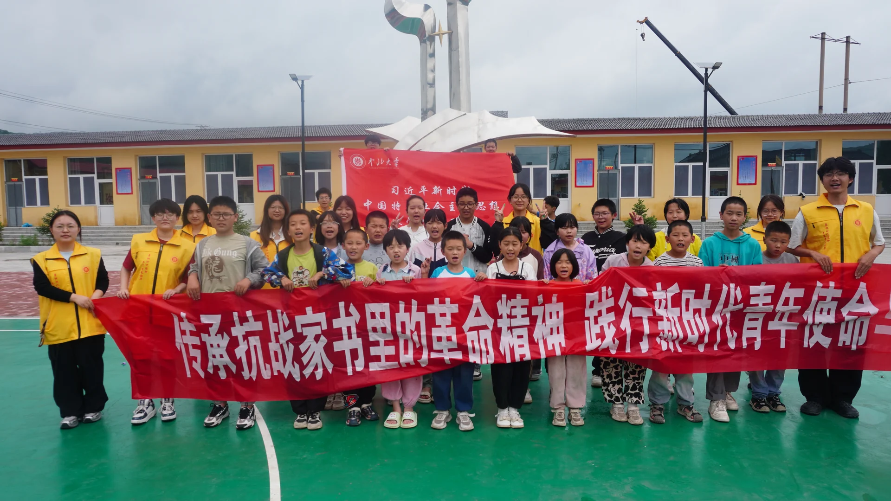
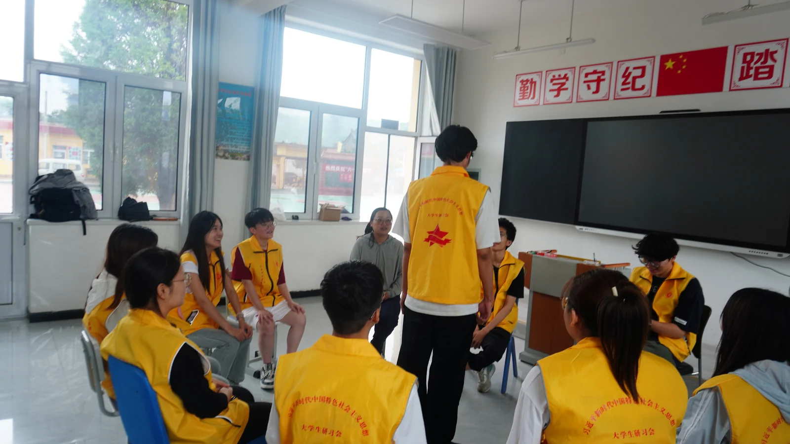
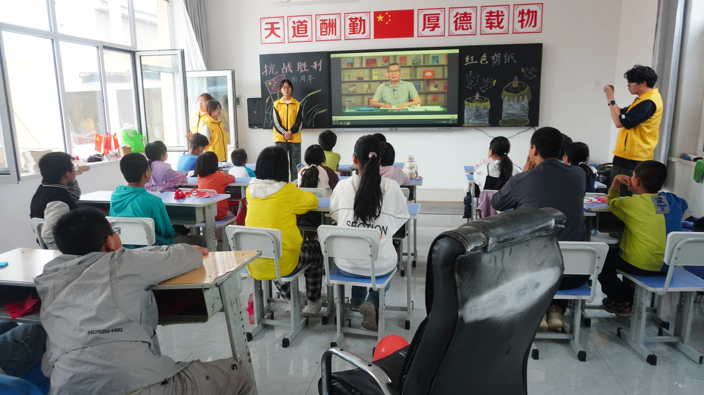

关于我
从发现问题，到推动事情真正发生。
我关注产品、用户与商业之间的连接。既能理解技术与需求，也愿意深入真实场景，完成从方案设计、资源协调到执行落地的全过程。
教育背景
中北大学 · 计算机科学与技术2023—2027（预计）｜本科在读
职业方向
产品管理 / 商业运营 / 业务拓展关注 AI 产品及技术驱动的商业场景。
工作方式
理解真实需求
从用户反馈、使用场景和项目目标出发，而不是先假设答案。
连接人和资源
让不同角色找到明确分工，把协作转化为可推进的行动。
关注实际交付
从方案设计走到落地执行，再根据反馈不断调整。
我承担的角色
移动鼠标了解我 · 点击固定
点击身份了解我
组织与领导力
项目与商业实践
精选实践
先看业务范围、职责与结果；展开查看过程与图片证据。
01 / BUSINESS OPERATIONS
从发现需求，做到业务落地。
晋创谷｜校园商业运营与合作
业务策划 · 运营执行 · 合作对接
负责影院日常运营与内容推广，推进轻自习、拼豆业务落地及校园渠道合作。
主导从选址到招募的落地过程
空间落地
推进选址、空间规划及基础设施配置，落实隔板、座位名牌与使用规则。
定价招募
制定定价方案，开展内容宣传与用户招募；月卡由开业早鸟价200元调整为标准价300元。
截至2026年10月
将办卡权益与影院到店体验连接起来
资源对接
对接校内联通门店，以观影或拼豆权益换取新生季现场及社群宣传资源。
领取流程
串联企业微信、公众号、小程序注册与电子票发放，明确领取步骤及前台兑换方式。
执行跟进
推进宣传物料与兑换提醒；针对凭证下发不到位的情况，协调使用办卡名单核验领取。
推进从零落地与日常运营
业务落地
推进拼豆体验业务筹备、上线与推广。
联合推广
将拼豆体验纳入联通新生权益，增加业务触达入口。
02 / K-POP ACTIVITIES
把各方资源，组织成共同的行动。
K-pop 活动｜双城主办与跨地区物料交付
牵头跨地区主办方协作，担任太原、运城城市主办；联动周边门店与商场资源，推进线下活动、宣传物料及跨地区物料交付。
活动策划与执行
太原、运城城市主办 · 门店合作 · 商场联动


物料统筹与交付
需求汇总、供应商对接、制作跟进、收款与发货


04 / TECHNICAL DELIVERY
把复杂的事，认真做到最后。
微影还形｜医疗 CT 三维重建与实体交付
项目组长 · 技术协作 · 交付推进
从接收临床任务，到三维重建、模型处理与最终实物交付，我参与并推动复杂技术任务的完整落地。
隐私说明：公开页面仅使用已去除姓名、病历号等识别信息的展示素材。
幕后工作笔记 / TROUBLESHOOTING换了零件，为什么问题还在？一次从零件更换继续追到结构干涉的排障过程。查看详情
- 01
拓竹 H2D 3D 打印机出现堵头及组件损坏。
- 02
参考官方资料并与售后沟通，更换热端组件后，故障依然复现。
- 03
继续观察设备结构、比对以往照片，发现废料盒安装位置过高，与左喷嘴发生干涉。
- 04
重新安装废料盒后，此前的异常消失。
这次排障没有停在“换过零件”这一步，而是继续追踪复现条件，直到找到真正影响设备运行的结构原因。
03 / PRODUCT IN PRACTICE
让产品解决问题，也贴近使用它的人。
Wen Workspace｜个人效率工具 · 个性化体验设计
一个源于个人多项目管理需求、持续迭代中的效率工作台。我提出需求、定义场景、评估交互，并通过 ChatGPT/Codex 辅助实现与验证。
管理多项目 · 当前首页用项目、今日重点与进行中任务形成可继续阅读的工作入口。
ITERATION RECORD查看 V0.1 与当前版本对比＋
HOW I BUILT IT查看实现方法与职责边界＋
从发现需求、设计交互，到借助 GPT 与 Codex 协作实现，再通过实际使用不断验证和调整。
- 发现问题
- 设计方案
- AI 协作实现
- 使用验证
我的主要工作是提出需求、定义场景、评估交互，并通过 ChatGPT/Codex 辅助实现；不表述为独立完成全部技术开发。
05 / LEADERSHIP IN PRACTICE
从做好一件事，到带动一群人做好。
新时代研习会｜团队管理 · 组织统筹 · 项目推进
我负责推进团队协作、部门分工与项目落地，让一支由多人、多组别构成的学生团队持续运转，并共同完成实践活动、项目申报与成果交付。


- 127 人
- 任期内骨干成员规模
- 6 个工作组
- 持续分工、协同推进
- 2025–2026
- 负责人任期阶段
HOW I LED
让分工持续运转，而不是停在名单上。
围绕任务分工、跨组协同和节点跟进组织日常运转，在具体工作中对齐负责人、时间与交付要求，让多条工作线持续向前。
- 任务分工
- 协同推进
- 组织运转
- 项目跟进


HOW WE DELIVERED
把团队协作带到真实场景。
团队协作最终落在项目申报与答辩、志愿实践和现场执行中。我既参与具体工作，也持续跟进信息、人员与交付节点的衔接。
- 项目推进
- 实践活动
- 申报答辩
- 落地执行


WHAT REMAINED
留下成果，也留下可继续运转的协作方式。
项目申报与答辩
围绕分工和节点组织材料与表达，让团队成果被完整呈现。
志愿实践
把组织协作带到课堂与实践现场，完成真实服务和团队交付。
团队成果与组织影响
成果归于共同参与的团队；持续跟进与复盘，让协作经验能够被下一次行动复用。
06 / EVENT OPERATIONS
感受节拍，感受生命。
半导体街舞社｜中北大学 B.D.T｜副社长
担任副社长，推进年度专场、商务合作与社服定制，协调校内外演出及日常训练。
社服定制
把团队需求，落实到每一件社服。
负责社服定制全流程，对接款式与印花规格，汇总尺码数量，协调制作与交付。
演出调度
对接校级、院级及社区演出，确认时长、场地与节目需求，协调人员和节目安排。
训练保障
预约训练教室，协调场地使用，支持社员日常排练。
经历
内容推广 · 达人建联品牌推广与协作
两类经历按具体合作分别呈现，不默认每个品牌都同时包含两类工作。
内容推广：根据具体合作要求参与内容理解、策划与发布。
图拉斯相关合作：参与 PR 对接、创作者建联与投稿记录维护，推进合作沟通。


组织协作 · 校园实践学生组织经历
承担班级、学生组织与社团中的沟通、协调和活动执行职责。
相关荣誉和大型活动成果均属于团队共同成果；个人职责以组织沟通、任务协调和现场执行为主。
能力与方法
产品思考
需求识别、场景拆解、功能优先级与交互反馈。
运营执行
业务流程、用户沟通、内容推广与线下协作。
项目协作
任务拆解、节点推进、资源协调与交付复盘。
AI 工具协作
使用 ChatGPT/Codex 辅助需求澄清、原型实现和迭代验证。